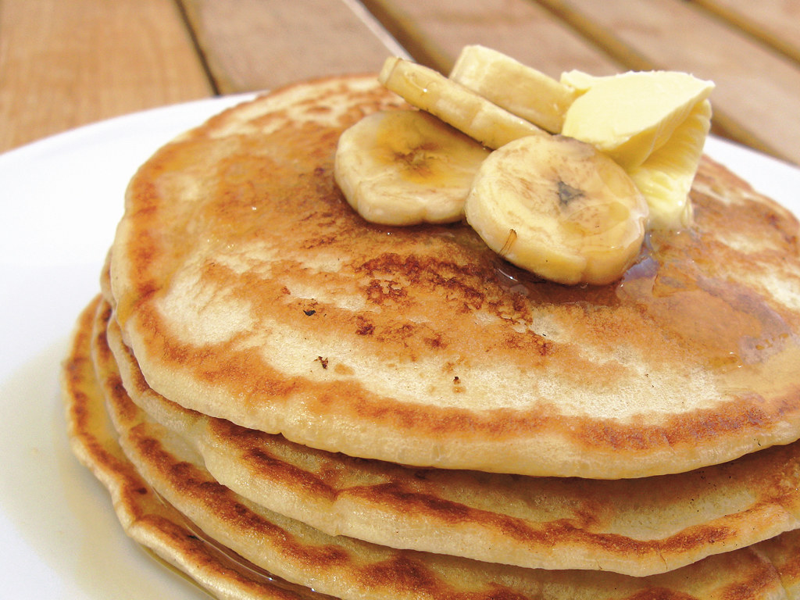

Home
Classic Pancakes

Description
Classic pancakes are fluffy, golden, and perfect for breakfast or brunch. Made with simple ingredients, they’re easy to prepare and delicious with syrup, fruit, or butter.
Ingredients
- 1½ cups (190g) all-purpose flour
- 1 tablespoon sugar
- 1 tablespoon baking powder
- ¼ teaspoon salt
- 1¼ cups (300ml) milk
- 1 egg
- 3 tablespoons melted butter or oil
- 1 teaspoon vanilla extract (optional)
Steps
- In a bowl, mix the dry ingredients: flour, sugar, baking powder, and salt.
- In another bowl, beat the egg, then add milk, melted butter, and vanilla.
- Combine the wet and dry ingredients until just mixed (don't overmix).
- Heat a non-stick pan or griddle over medium heat and lightly grease it.
- Pour ¼ cup of batter per pancake onto the pan. Cook until bubbles form on top.
- Flip and cook the other side until golden brown.
- Serve warm with your favorite toppings like syrup, fruit, or whipped cream.